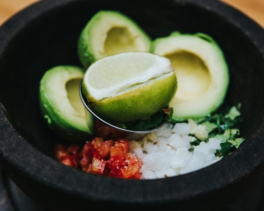

Guacamole

Description
A refreshing tableside Guacamole dip that's great with tortilla chips. Inspired/Adapted from Añejo Restaurant.
Ingredients
- 2 whole avocados
- 1 Roma tomato
- 1/4 white onion
- 2 tbsp chopped cilantro
- 1 tsp minced fresh garlic
- 1 tsp salt
- juice of half a lime
Steps
- Finely dice the tomato and onions.
- Cut, peel, and remove the pits of the avocados.
- Combine all ingredients in a bowl and mix thoroughly with a fork. Leave a few larger chunks of avocado intact for texture.
- Serve with salted corn chips.
Back to home